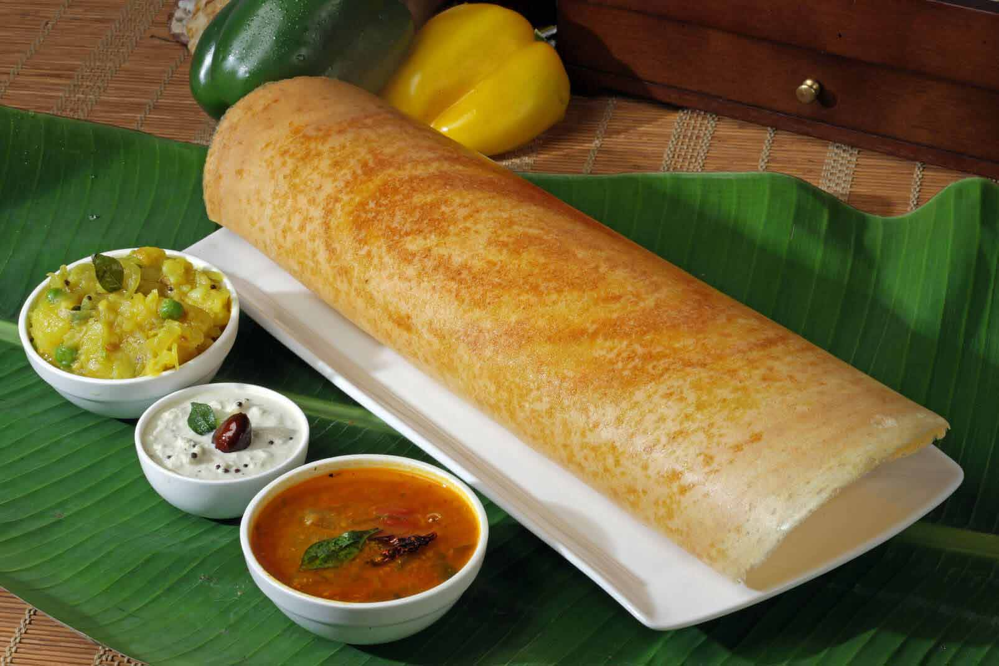

Dosas

Masala Dosa Recipe is a simple and common, tasty south Indian staple breakfast
recipe made with rice and urad dal. principally an extension to the normal dosa
recipe, the place dosa is made crisp and filled with potato masala.
it’s maybe one of many well-known dishes from south India, which it could be
served for morning breakfast or additionally as a night snack with coconut chutney and sambar.
Ingredients
- Rice Flour
- Urad Daal
- Methi Seeds
- Poha
- Lentils
- Salt
- Water
- Oil
- Salt
Steps to prepare
- Make the potato palya or stir fry and keep ready.
- Heat a frying pan or tawa. Spread the dosa batter. If using non-stick pan, then don’t spread oil.
- Sprinkle some oil on the sides of the dosa. Cover the dosa with a lid and let it cook.
- When the top side is cooked, spread some more oil, if you prefer, on the dosa. Spread the red chutney on the dosa all around.
- Top the dosa with the potato palya filling and spread it lightly.
- Fold the dosa.
- Serve Mysore Masala Dosa hot with garlic chutney, coconut chutney and sambar.